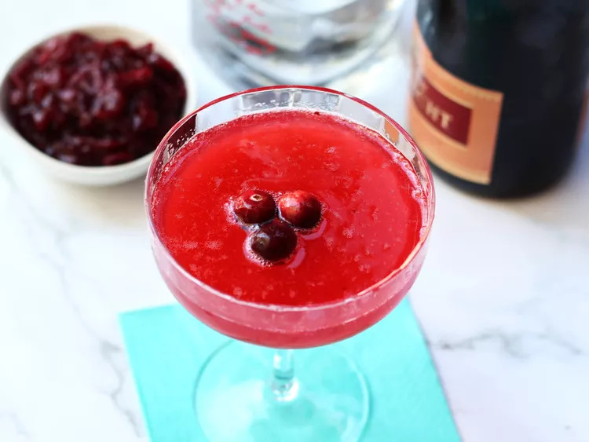

Cranberry Blush Sparkler

Description
This festive cranberry blush sparkler combines vodka, tart cranberry sauce, a hint of lime, and is topped off with bubbly pink champagne. With a pop of color, this cocktail is ideal for gatherings and holiday cheer. Increase simple syrup to 1 ounce if you like things a little sweeter.
Ingredients (for 1 serving)
- ice, as needed
- 1 fluid ounce vodka
- 2 tablespoons cranberry sauce
- 1/2 fluid ounce lime juice
- 1/2 fluid ounce simple syrup
- 4 fluid ounces rose champagne, or as needed
- 3 fresh cranberries, for garnish (optional)
Directions
- Step: Fill a cocktail shaker halfway with ice. Add vodka, cranberry sauce, lime juice, and simple syrup. Seal and shake vigorously for 10 to 15 seconds. Strain into a coupe glass or champagne flute, and top with champagne. Garnish with cranberries.